Latest Stories
Everything we have published, newest first. Opinion, recaps, history, and columns across every Bay Area team.
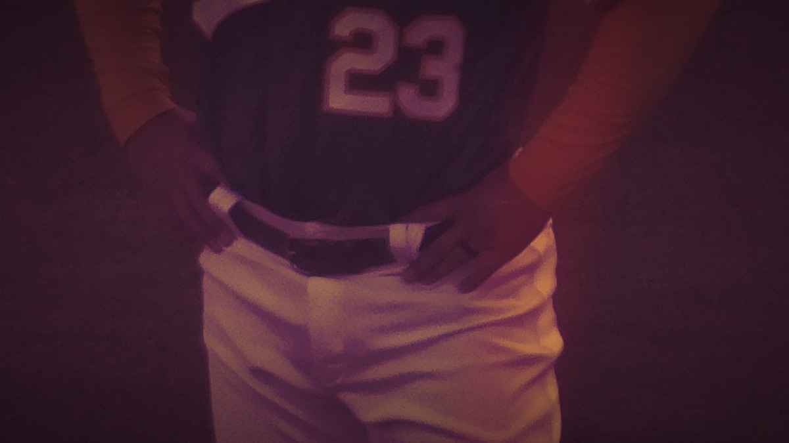
Bay Area at the 2026 All-Star Game: Langeliers Reached Twice, Arraez Got One Swing, Webb Never Threw
AL 4, NL 0 in Philadelphia. Langeliers started and reached base twice. Arraez struck out in his lone at-bat. Webb never left the bullpen.
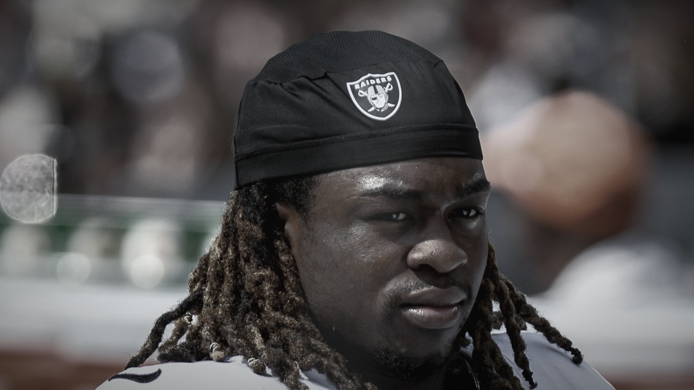
Raiders 2026 Preview: Kubiak, Cousins, and a Rookie Named Mendoza Try to Fix a 3-14 Mess
A Bay Area take on the reset in the desert: new coach, a bridge QB, the No. 1 pick, Jeanty, and a brutal AFC West.
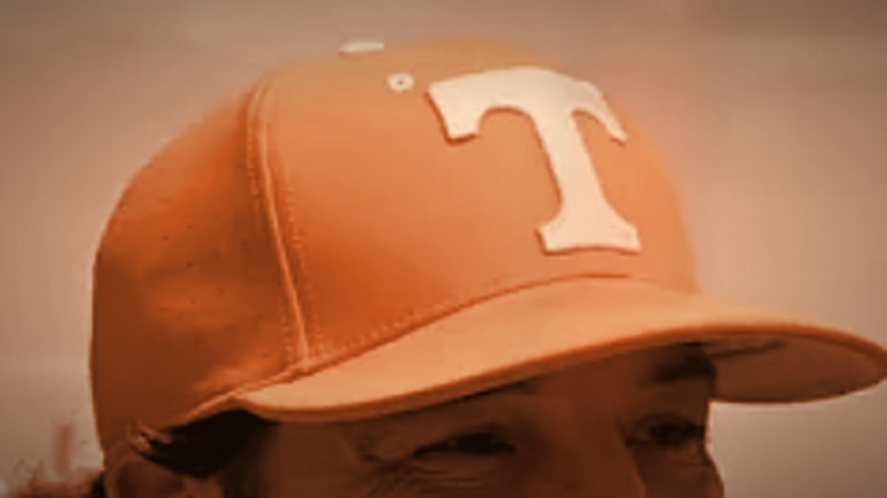
Giants at the All-Star Break: 41-55 and a Rookie Manager Learning on the Job
Fourth in the NL West, 20.5 back. The first-half breakdown, Vitello's rookie half, and the reset coming August 3.

The Giants Bullpen Finally Held One: Erik Miller Slams the Door in a 3-1 Win
Two straight wins after a brutal opener, and for once the ninth inning was boring. Adames three hits, McDonald seven.
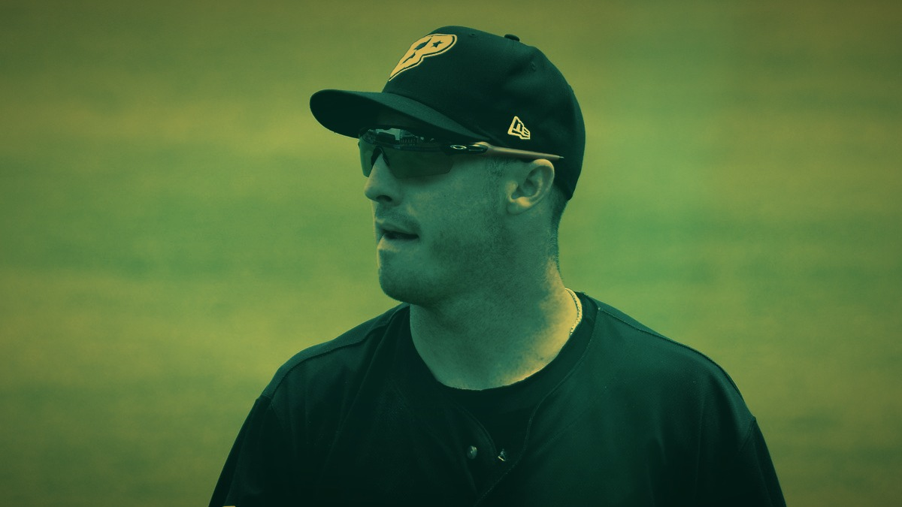
A's at the All-Star Break: 41-55, a Nine-Game Skid, and the Mirage I Warned You About
First place to fourth, eight back, nine straight losses into the break. The first-half breakdown and why the second half gets worse.
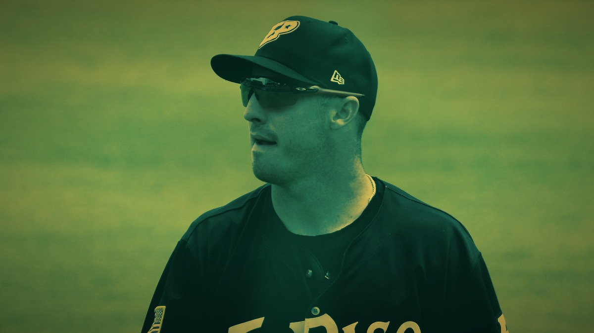
I Told You the A's Were a Mirage: Nine Straight Losses, 9-1 to the White Sox
1-9 in their last ten, a 7.09 ERA, a free fall to 41-53. This was always coming.

Jerry Rice Says This Is the Year the 49ers Break the Super Bowl Drought
"I think this is the year for the Niners." The GOAT called his shot at Lake Tahoe.
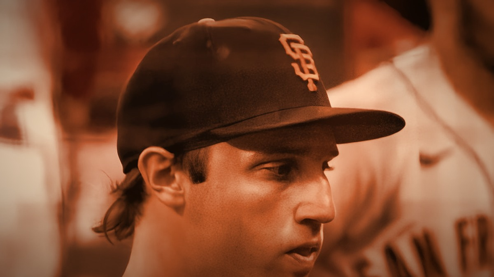
Casey Schmitt Is Having an All-Star Breakout Season, Even If the All-Star Game Didn't Notice
19 homers, a .494 slug, a 118 wRC+, and an All-Star case the NL roster ignored.
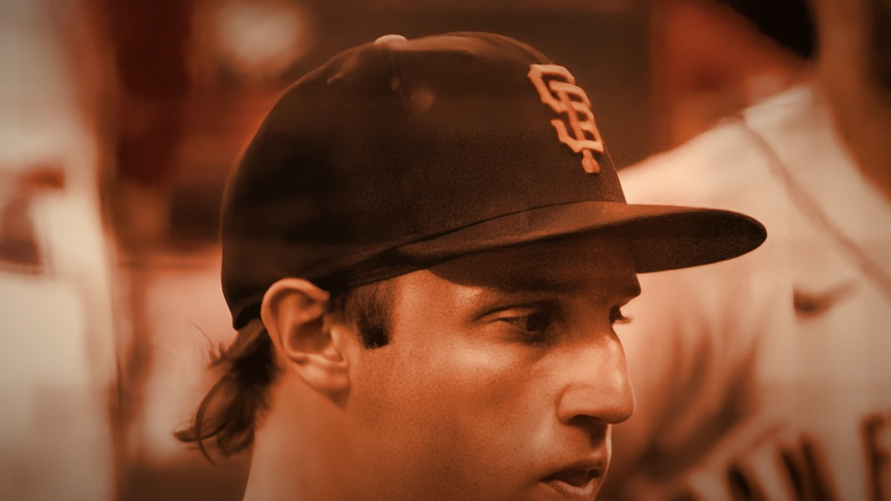
Tyler Mahle Finally Won a Game, and Casey Schmitt Made Sure It Counted
Seven strong innings, a three-run Schmitt homer, and a 4-2 win over the Rockies.
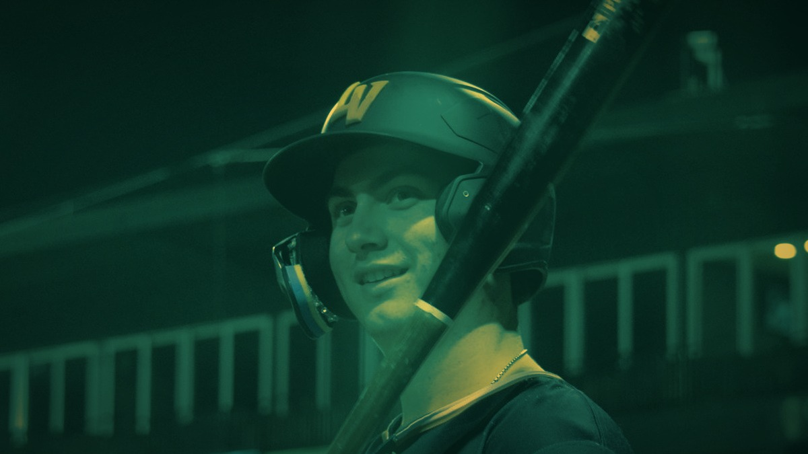
The A's Lost 1-0 Again, Eight Straight Now, and They Are Coming Back to Earth Fast
Four-hit by the White Sox, an eighth straight loss, and a free fall to 41-54.
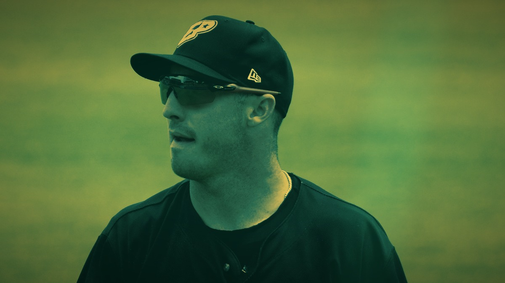
A's at White Sox, July 10: Six Straight Losses and Jacob Lopez's 7.04 ERA Walk Into Chicago
A 41-52 team on a six-game skid, a 7.04 ERA on the mound, and a clear road underdog. A preview.

This Might Be the Best Team Kyle Shanahan Has Ever Had
Purdy, a healthy McCaffrey, Evans and Kirk, and Bosa and Warner back. If they stay healthy, this could be the year.
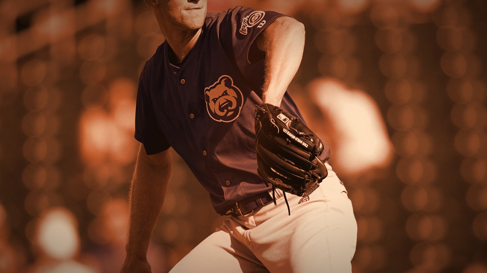
The Giants Blew Another One, and It Is the Same Sickening Story
Two outs from beating the worst team in baseball, Caleb Kilian gave it all back. Rockies 4, Giants 3.
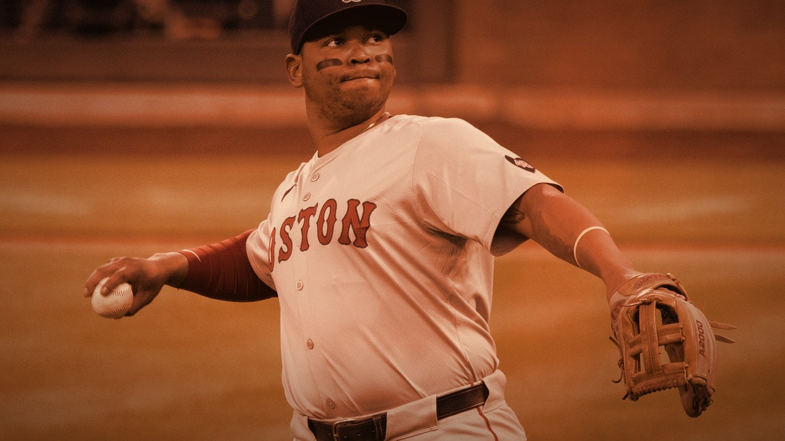
Rafael Devers Looks Wide Awake Again for the Giants
Another one out at Oracle Park, his 19th, and after a short cold spell the slugger looks locked in again.
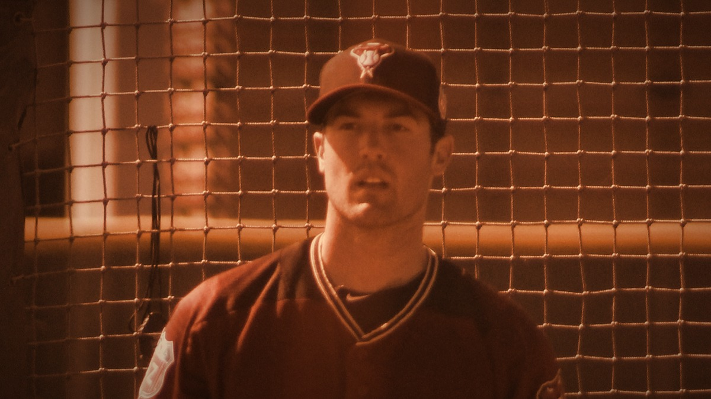
Giants vs Rockies, July 10: Ray Has to Bury Colorado, and Eldridge Is the Reason to Watch
A game they have to win, and a 6-foot-7 rookie turning inside pitches into splash hits.
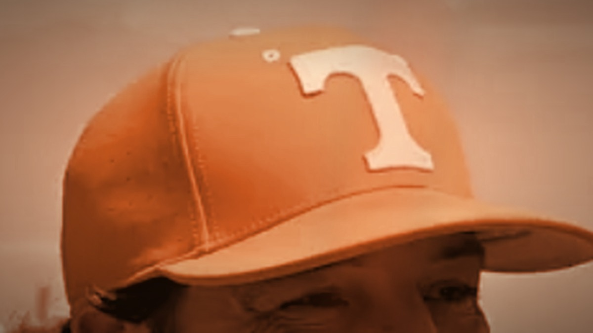
Tony Vitello Was Not Ready to Manage in the Majors, and He Told Us So Himself
"I can't talk down to these guys." That one admission explains the whole season.
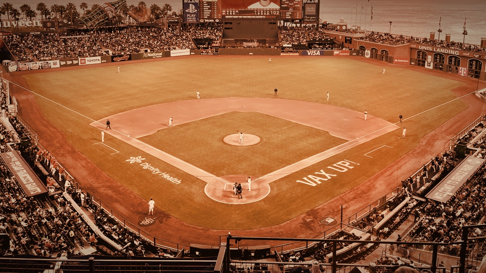
The Giants Might Actually Have Something in Carson Whisenhunt
Two starts, two wins for the rookie lefty, and three homers in an 8-2 win over Colorado.
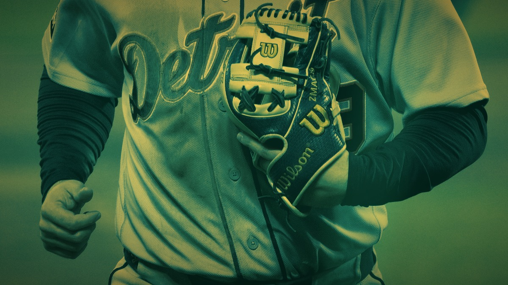
The A's Got Swept and Have Now Lost Six Straight, 4-1 to the Tigers
Valdez retired the first 11, three Tigers homers, and a rookie went deep on his first swing.
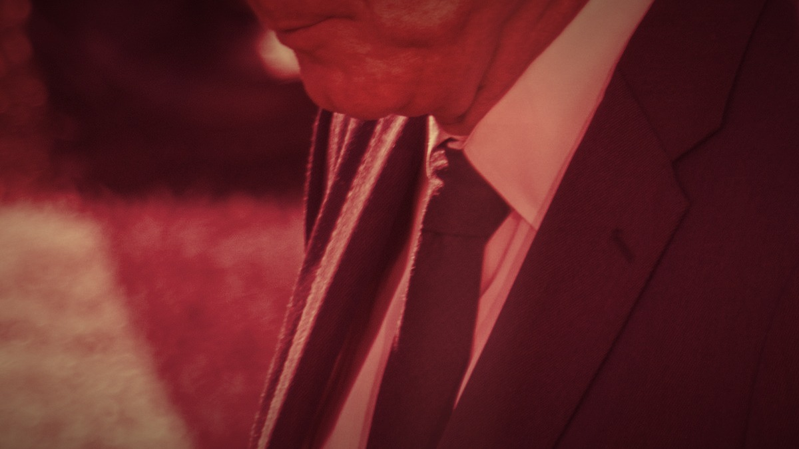
Two Hall of Famers, One Job: The Montana-Young Controversy and the Trade That Split the Bay
The 49ers had two HOF quarterbacks, then traded Joe Montana. How it happened, and why they were right.
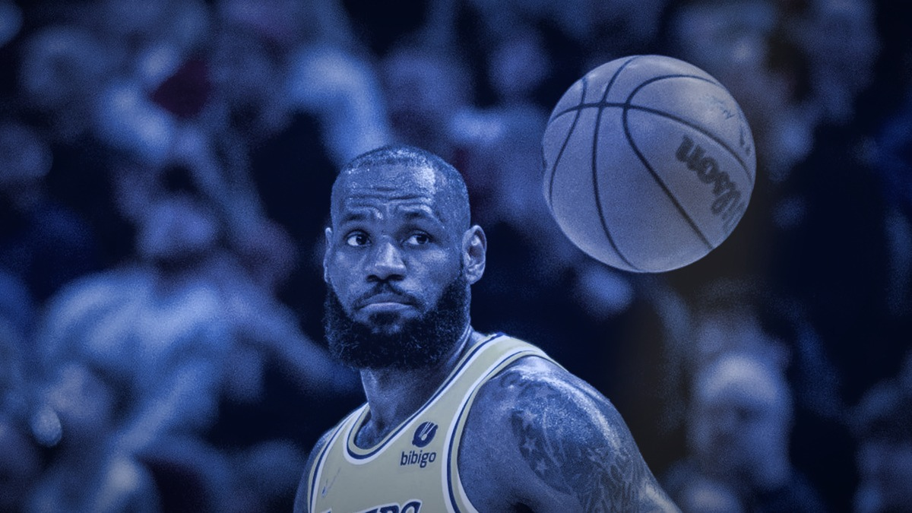
LeBron and Curry on the Same Team: What It Would Mean for Their Legacies and the NBA
LeBron is leaving L.A. and the Warriors want him next to Steph. What it would really mean.
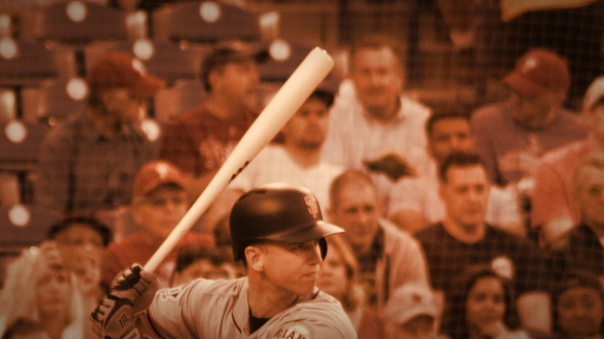
This Giants Season Is Over. Build Around Bryce Eldridge and Explain the Bullpen.
At 35-49, the year is done. The future is Eldridge, and Posey's no-leverage bullpen makes no sense.

Dylan Cease Nearly No-Hit One of the Worst Giants Teams I Can Remember
Eight and a third hitless innings and a 10-0 beatdown at home.

A Rookie Named Melton Made the A's Look Like a Beer-League Team, 6-1
Nine strikeouts from a kid on his sixth start.

I Didn't Like the Tony Vitello Hire, and I'm Not Going to Pretend Otherwise
Bold is not the same as smart.
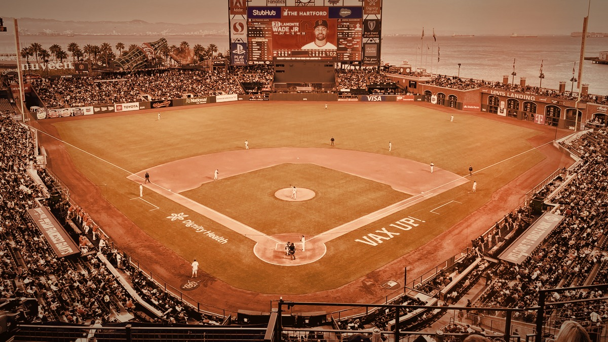
The Giants Woke Up the Worst Offense in Baseball
A quiet Blue Jays lineup found life at Oracle Park.

Brandon Aiyuk Has Gone Full Antonio Brown, and It's Hard to Watch
The 49ers success story that curdled.

The 49ers Are Still Paying For Vegas
That overtime in Allegiant Stadium still shapes everything.

The Warriors Are Out of Easy Answers, and That's the Whole Story
The grace period the dynasty bought is finally over.

The Giants Keep Promising October. Oracle Park Is Still Waiting.
Fine does not fill the ballpark in September.

The Sharks Rebuild Finally Has a Pulse, and His Name Is Macklin Celebrini
Seven springs without playoff hockey, and suddenly the Tank matters.

The A's Play in Sacramento Now, and That's the Whole Ugly Story
A century of Oakland baseball, boxed into a Triple-A park.

The NFL Blackballed Colin Kaepernick for Kneeling, and Everyone Knows It
It was never about talent.

Why the Bay Area Is One of the Greatest Sports Regions
The big-picture case for the region.

Team of the Decade: When the 49ers Ran the NFL
Five Super Bowls and the gold standard of a generation.
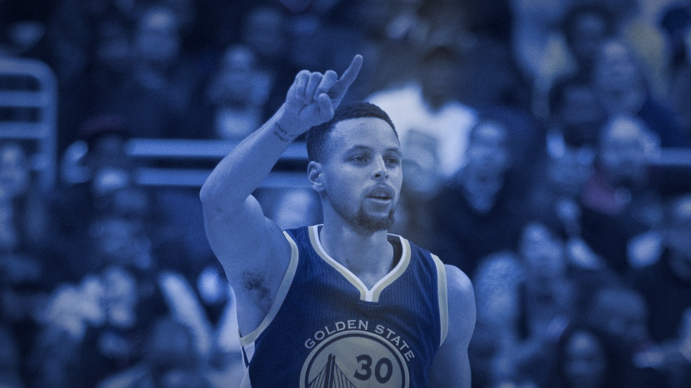
73-9: The Best Regular Season Ever, and Then They Added Durant
The greatest record ever, a crushing Finals loss, and the answer.

From Rick Barry to the Splash Brothers
A 1975 upset and a modern dynasty that changed basketball.

Even-Year Magic: The Giants Dynasty of the Early 2010s
Three titles in five years, all in even years.
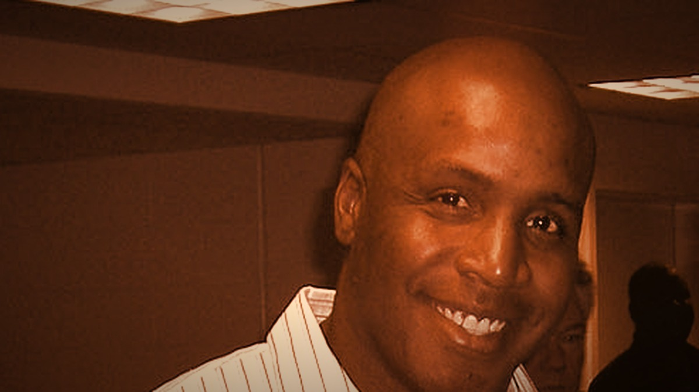
Barry Bonds: The Loudest Bat San Francisco Ever Saw
73 home runs and four straight MVPs.
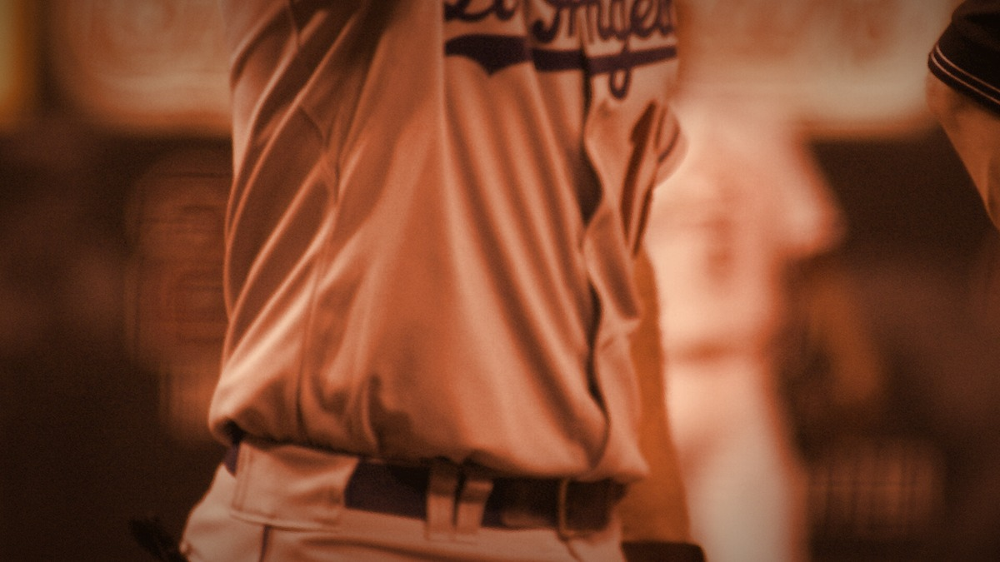
Jeff Kent: The MVP Nobody Had to Like
The best offensive second baseman of his time.
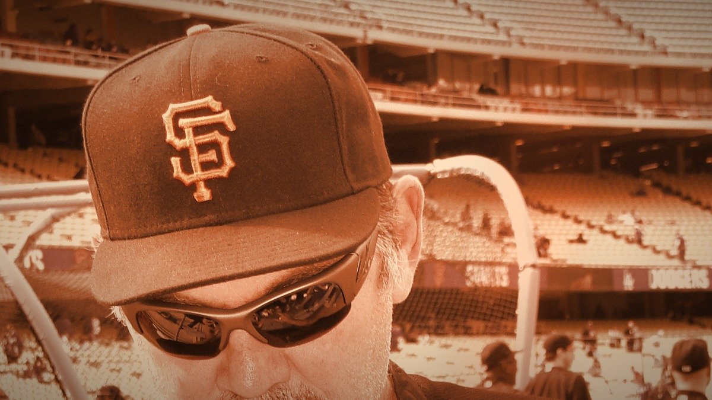
Bochy's Wizardry and the Core Four Bullpen
How close games became championships.

Madison Bumgarner Owned the 2014 World Series
Five scoreless to close Game 7 on two days' rest.

The Catch, and the Dynasty It Started
Montana to Clark at Candlestick, 1982.

The Night Klay Thompson Scored 37 in a Quarter
Thirteen shots, thirteen makes, one quarter.
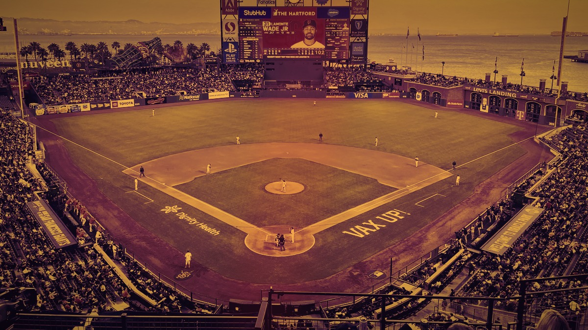
Welcome to Bay Area Sports Blog
What this blog is and why it exists.